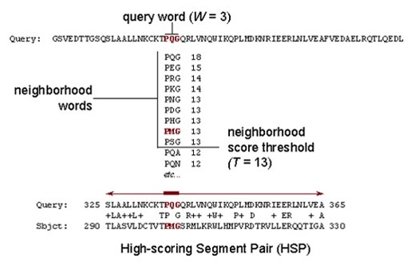
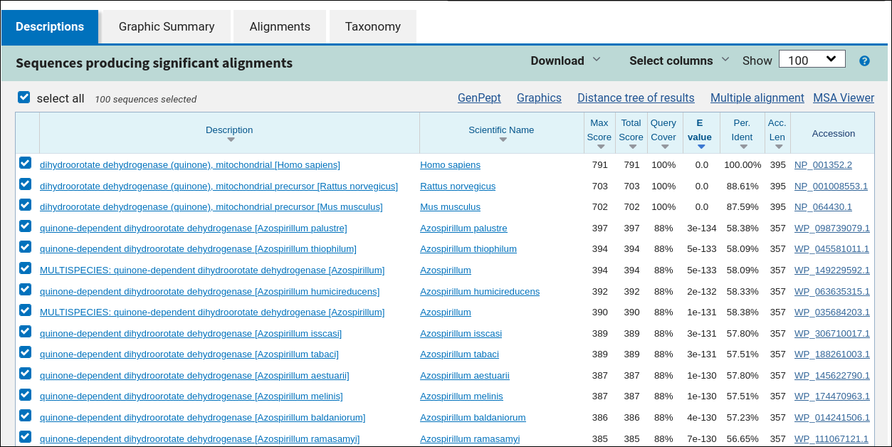
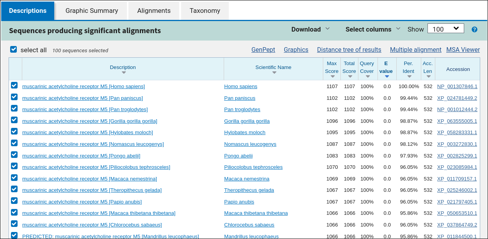

Hit
Послідовність у базі даних, яка має значущий збіг із вашим запитом. У результатах BLAST один запит може мати багато hits.
Пошук схожих послідовностей у біологічних базах даних.
Гомологи — це біологічні послідовності (ДНК, РНК або білки), які мають спільне еволюційне походження. Інструмент BLAST (Basic Local Alignment Search Tool) дозволяє швидко знайти у великих базах даних послідовності, що мають локальну схожість із вашою запитною послідовністю.
Такий пошук використовують для анотації генів, виявлення функціонально подібних білків і порівняння організмів на молекулярному рівні.

Послідовність у базі даних, яка має значущий збіг із вашим запитом. У результатах BLAST один запит може мати багато hits.
Очікувана кількість випадкових збігів такої ж якості або кращої. Чим менше E-value, тим імовірніше, що збіг біологічно значущий.
Частка однакових позицій у вирівнюванні двох послідовностей, зазвичай виражається у відсотках (% identity).
BLASTp-запит: людський фермент DHODH (dihydroorotate dehydrogenase). Короткий підсумок таблиці результатів:
Висновок: DHODH сильно консервативний від ссавців до бактерій.

BLASTp (GenPept): мускариновий ацетилхоліновий рецептор M5. Короткий підсумок результатів:
Висновок: рецептор M5 (GPCR, переважно у ЦНС) є сильно еволюційно консервативним серед приматів.
